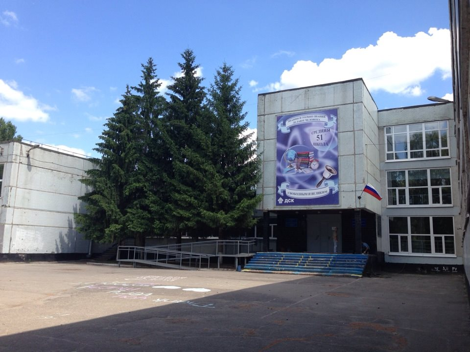
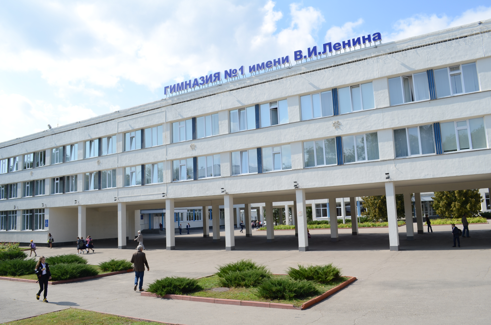
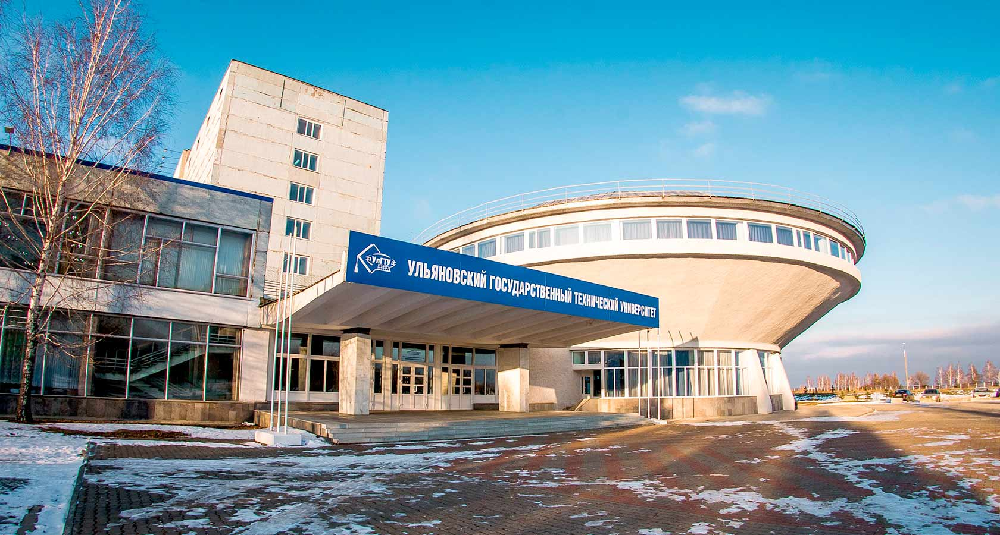
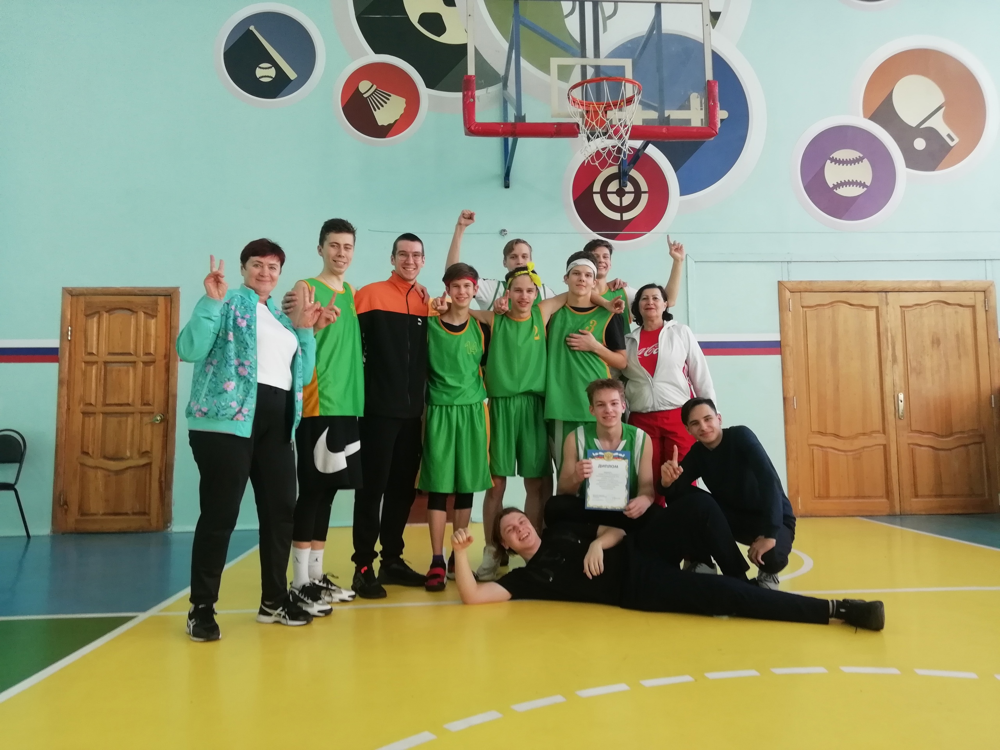

Школа №51 им А.М. Аблукова
Первые 6 лет получения образования я учился в Школе №51 им А.М. Аблукова.
Она находится в районе, в котором я живу, поэтому дойти туда для меня не было особым трудом.
Но, после инцидента, в котором меня подозревали, но я не имел к нему никакого отношения
(я был в другом городе, когда всё случилось)
меня перевели в Гимназию
Гимназия №1 им В.И. Ленина
После 51 школы я учился в Гимназии №1 им В.И. Ленина.
Я доучился до 9 класса, после поступил в 10-11 на техническое направление.
Меня привлекло программирование, поэтому для себя я решил, что буду заниматься кодом.
Ульяновский Государственный Технический Университет
Сейчас я учусь в Ульяновском Государственном Техническом Университете на факультете ФИСТ,
направлении ИВТ (информатика и вычислительная техника).
Образование



спорт

.jpg)
.jpg)
баскетбол
Баскетбол (англ. basket «корзина» + ball «мяч») — спортивная командная игра с мячом, в которой мяч забрасывают руками в кольцо соперника. В баскетбол играют две команды, каждая из которых состоит из пяти полевых игроков (замены не ограничены). Цель каждой команды — забросить мяч в кольцо с сеткой (корзину) соперника и помешать другой команде завладеть мячом и забросить его в свою корзину. Корзина находится на высоте 3,05 м от паркета (10 футов). За мяч, заброшенный с ближней и средней дистанций, засчитывается два очка, с дальней (из-за трёхочковой линии) — три очка; штрафной бросок оценивается в одно очко. Стандартный размер баскетбольной площадки — 28 м в длину и 15 м — в ширину. Баскетбол — один из самых популярных видов спорта в мире.
Лёгкая атлетика
Лёгкая атлетика — олимпийский вид спорта, включающий бег, ходьбу, прыжки и метания. Объединяет следующие дисциплины: беговые виды, спортивную ходьбу, технические виды (прыжки и метания), многоборья, пробеги (бег по шоссе) и кроссы (бег по пересечённой местности).
Бальные танцы
Спортивно-бальные танцы — группа различных парных танцев, некоторые из которых имеют народные истоки. Исполнялись на балах, которые проводились в помещениях, застеленных паркетом. Из огромного разнообразия как элитных (историко-бытовых), так и народных танцев в группу бальных попали танцы, характеризующиеся 2 признаками: все бальные танцы являются парными. Пару составляют мужчина и женщина.
Баскетбол (англ. basket «корзина» + ball «мяч») — спортивная командная игра с мячом, в которой мяч забрасывают руками в кольцо соперника. В баскетбол играют две команды, каждая из которых состоит из пяти полевых игроков (замены не ограничены). Цель каждой команды — забросить мяч в кольцо с сеткой (корзину) соперника и помешать другой команде завладеть мячом и забросить его в свою корзину. Корзина находится на высоте 3,05 м от паркета (10 футов). За мяч, заброшенный с ближней и средней дистанций, засчитывается два очка, с дальней (из-за трёхочковой линии) — три очка; штрафной бросок оценивается в одно очко. Стандартный размер баскетбольной площадки — 28 м в длину и 15 м — в ширину. Баскетбол — один из самых популярных видов спорта в мире.
Лёгкая атлетика
Лёгкая атлетика — олимпийский вид спорта, включающий бег, ходьбу, прыжки и метания. Объединяет следующие дисциплины: беговые виды, спортивную ходьбу, технические виды (прыжки и метания), многоборья, пробеги (бег по шоссе) и кроссы (бег по пересечённой местности).
Бальные танцы
Спортивно-бальные танцы — группа различных парных танцев, некоторые из которых имеют народные истоки. Исполнялись на балах, которые проводились в помещениях, застеленных паркетом. Из огромного разнообразия как элитных (историко-бытовых), так и народных танцев в группу бальных попали танцы, характеризующиеся 2 признаками: все бальные танцы являются парными. Пару составляют мужчина и женщина.
увлечения

Мои увлечения не сильно отличаются от увлечений других ребят.
Я люблю поиграть, слушать музыку и смотреть фильмы, аниме или мультфильмы.
Мои любимые исполнители
Мои любимы аниме и фильмы
так же, кроме того, что я слушаю музыку, иногда я её делаю ради своего удовольствия.
Мои любимые исполнители
Мои любимы аниме и фильмы
так же, кроме того, что я слушаю музыку, иногда я её делаю ради своего удовольствия.